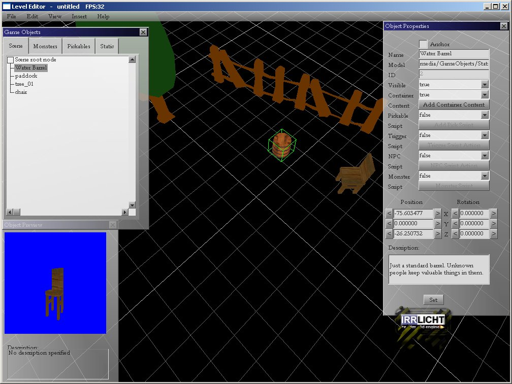

Level Editor is irrlicht based application used for making game levels/maps.
In this tutorial, we gonna learn how to place objects on the map, and how to manipulate them.
Start Level Editor.
You should see game objects window with a list of placed game objects in a tree to the left. Tab 'scene' is empty at first, and gets populated as you place 3d models on the map. Other tabs (Monsters, Pickables, Static) contain available 3d models you can pick and place on the map.

Monsters are animated models used for enemies, NPCs, and playing characters.
Pickables are objects you can pick and place in your inventory.
Static are objects that are too big to pick up, usually not animated (but you can see a weaving tree in there, why not), and some of them could be interactive (later).
Select tab with Static models, pick a house with mouse click and place it on the map with another click. Like house, place few more models to the map, don't be shy. While you hower with mouse pointer over models the model preview will be shown in the Object Preview window below.
Navigation
To navigate camera around in Level Editor use these controls:
Rotate map with right mouse press and hold.
Pan map with SHIFT + right mouse press and hold (or WASD or arrows keys).
Zoom map with mouse scroll.
To move and rotate 3d model around use these controls:
Move selected object by clicking on it and dragging it around (left mouse press and hold).
Rotate selected object around Y axis by pressing SHIFT + left mouse press and hold.
Rotate selected model around X and Z axis by holding X and Z keys respectively plus mouse left click.
Scale selected object by pressing SHIFT + mouse scroll.
You can use Object Properties window buttons to change position and rotation of selected object.
Also you can enter coordinates in edit boxes and press 'Set' button (or just hit enter).
Moving model around with mouse drag will interact with terrain. All Static objects become part of the terrain. That means you can place the barrel on the table. And dagger on the barrel easily. If there is no terrain, objects will collide with grid plane.
Save/Load
Maps can be saved in two format: irrlicht scene (*.irr) and our custom map format. Irr scene can be loaded to irr edit and vice versa. Use "File->Save to Irr Scene" to save map in irr format. Our custom format stores game related information, and can be loaded in game example provided. Save your map (go to File->Save Level) to some file in ./maps dir. In ./game directory you can find game_config.xml file. Edit 'MapStart' attribute to point to your map, for example: filename="maps/mymap.map". Add your map to list of maps under 'Maps' tag like this: Level id="0" filename="mymap.map". Start game example and it will load your map.
Advanced topic: Adding your own models to Level Editor:
If you want to add your own model to the Level Editor, copy model file along with all the textures in media/GameObjects/XXX drectory where XXX is either Static, Monster or Pickable directory, depending on the type of your model. After placing your model, for example race_car.3ds to Static directory, you should edit Static.xml file to include your file like this: Static filename="race_car", no extension on filename. Next thing to do is write race_car.xml file which will contain default attributes for your model like this:
<Name value="My Race Car"/>
<Model value="race_car.3ds"/>
<Description value="Very fast car. Used for races."/>
See other models xml files to get the idea how it should look like. Next time you start Level Editor, your model race_car will appear in Static Tab. You can place it on the map and use it in the game.
If you are adding animated model, copy file to media/GameObjects/Monsters dir and use xml file to specify Animation frames.
<Animation name="Idle" start="332" end="380"/>
Only x and b3d animated models are proven to work. See other animated models xml files to get the idea how it should look like.
Petar Bajic
MPE (C) All Rights Reserved
Homepage: www.mystic-peanut.com
July, 21 2008.